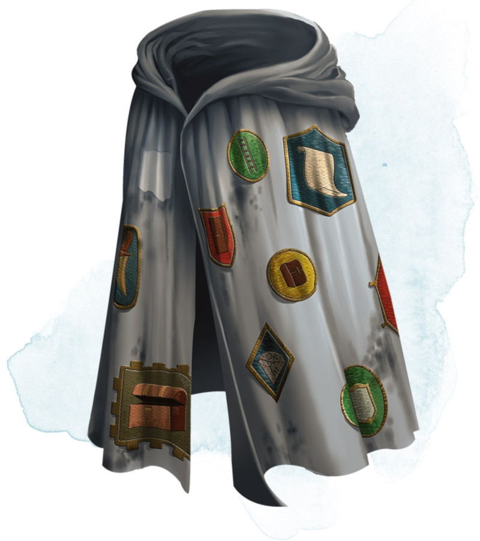

Robe de camelot
Objet merveilleux, peu commun
Cette robe est recouverte de pièces de tissu de toutes tailles et de toutes formes. Tant que vous portez cette robe, vous pouvez utiliser une action pour détacher l'un des morceaux de tissu, ce qui le transforme en l'objet ou la créature qu'il représente. Une fois que la dernière pièce est enlevée, la robe devient un vêtement ordinaire.
La robe possède deux de chacun des morceaux de tissu présentés ci-dessous :
• Dague
• Lanterne sourde (éclairée avec réservoir plein)
• Miroir en acier
• Perche (3 m)
• Corde en chanvre enroulée (15 m)
• Sac
De plus, la robe possède 4d4 autres pièces de tissu. Le MD choisit les pièces ou les détermine de manière aléatoire.
La robe possède deux de chacun des morceaux de tissu présentés ci-dessous :
• Dague
• Lanterne sourde (éclairée avec réservoir plein)
• Miroir en acier
• Perche (3 m)
• Corde en chanvre enroulée (15 m)
• Sac
De plus, la robe possède 4d4 autres pièces de tissu. Le MD choisit les pièces ou les détermine de manière aléatoire.
| d100 | Pièce de tissu |
|---|---|
| 01-08 | Un sac contenant 100 po |
| 09-15 | Un coffret en argent (30 cm de longueur, 15 cm de largeur et de hauteur) d'une valeur de 500 po |
| 16-22 | Une porte en fer (jusqu'à 3 m de largeur et 3 m de hauteur, barrée du côté du votre choix), que vous pouvez placer dans une ouverture à portée ; elle s'adapte à l'ouverture, se fixant et s'alignant elle-même aux parois |
| 23-30 | 10 pierres précieuses d'une valeur de 100 po chacune |
| 31-44 | Une échelle en bois (7,2 m) |
| 45-51 | Un cheval de selle avec des fontes |
| 52-59 | Une fosse (un cube de 3 mètres de côté), que vous pouvez placer sur le sol dans un rayon de 3 mètres autour de vous |
| 60-68 | 4 potions de soins |
| 69-75 | Une barque (3,6 m de long) |
| 76-83 | Un rouleau de parchemin contenant un sort de niveau 1 à 3 |
| 84-90 | 2 molosses |
| 91-96 | Une fenêtre (60 cm x 1,2 m, jusqu'à 60 cm de profondeur), que vous pouvez placer sur une surface verticale que vous pouvez atteindre |
| 97-00 | Un bélier portable |
Dungeon Master´s Guide (SRD)
